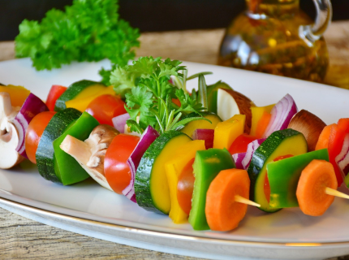
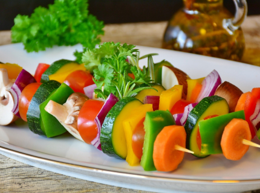

Veganismo é a prática de abster-se do uso de
produtos de origem animal, procurando excluir,
na medida do possível, o uso de qualquer
produto de origem animal, seja na alimentação
ou vestuário. Um seguidor desta prática é
conhecido como vegano.
 

Existem diversos motivos que validam o veganismo, por ser um tema que abrange relações que vão desde escala pessoal como a saúde
de cada um, até escala internacional como é o caso do meio ambiente. Com isso, separamos alguns tópicos a serem destacados
e que valem a pena ser recebidos com maior atenção:
• O consumo de carne e a falta de água no mundo
Segundo Malin Falkenmark, conselheiro científico do Stockholm International Water Institute (SIWI), metade da população
mundial enfrentará falta d água caso os atuais hábitos de alimentação continuarem como estão. A saída seria um consumo
sustentável, que aposte em dietas compostas prioritariamente por proteínas de origem vegetal e não animal, como atualmente.
Para a produção de leite, o consumo é de aproximadamente 10.000 litros de água/kg; e para a carne 20.000 a 50.000 litros de
água/kg (EMBRAPA).
Segundo a plataforma ‘Water FootPrint, a quantidade de água usada em todas as etapas da produção (pegada hídrica)
de carne bovina é de 15.400 litros/kg. Os frangos demandam 4.300 litros de água/kg.
As emissões de carbono geradas pelo setor pecuário são maiores do que o de transportes e isto se deve à uma crescente
demanda por carne e laticínios (Fonte FAO). É necessário uma nova forma de pensar e se alimentar. A dieta vegana consome
de cinco a dez vezes menos água que a de proteína animal. Esta, demanda um terço das terras aráveis do mundo para o
cultivo de colheitas para alimentar os animais, segundo a ANDA (Agência de Notícias de Direitos Animais). Vamos refletir
sobre nossas ações e vamos agir mais antes de dizermos que contribuímos para um planeta melhor.
Economize água: seja vegan.
• Salva os Animais
Ao comprar ou consumir produtos de origem animal, a demanda acaba aumentando e assim, mais animais são abatidos para
supri-la. Ou seja, ao se consumir menos produtos com tal origem, mais animais são salvos de abates e de práticas cruéis usadas
para extração de seus derivados.
• Ajuda a sua saúde
Diversos estudos relacionam o consumo de ovos, carnes e laticínios ao surgimento de cânceres, como por exemplo o de estômago,
de próstata e de mama. Além disso, uma alimentação vegana é comprovadamente poderosa na prevenção de doenças cardiovasculares.
Vale lembrar também que o veganismo é riquíssimo em variedades de sabores e pratos; uma pessoa pode fazer diversas receitas
diferentes por dia, o que é bastante comum principalmente por a maioria das receitas serem saldáveis e poderem ser consumidas
sem grande peso na consciência.
• Gera mais empregos
É preciso muito menos mão de obra para o manejo de uma boiada do que para uma plantação de vegetais. Também há uma melhor
distribuição de riquezas geradas com plantações, uma vez que por conta de a pecuária empregar menos pessoas
(do que a agricultura), as riquezas são mais concentradas na mão dos latifundiários.
• Não é difícil
Verduras, cereais, frutas e legumes são mais baratos do que carne, ovos e laticínios. Contudo, há também
hambúrgueres vegetais, salsichas de soja e etc. que são de fato produtos mais caros para serem consumidos com
grande frequência, porém ao se ter como foco a alimentação de produtos como os que são normalmente encontrados nas
feiras (vegetais, frutas, etc.) a economia é certamente grande. Mas saiba que a maioria dos produtos feitos com receitas
com derivados de origem animal como hambúrguer, pizza e churrascos por exemplo, têm sua alternativa vegana que
tenta sempre se aproximar ao máximo das características da receita original.
Um vegano é uma pessoa que procura viver sem explorar os outros animais. Um vegano não consome produtos de origem animal
(incluindo para alimentação, para vestuário ou para qualquer outro fim), nem participa em actividades que envolvam exploração
animal.
Ser vegano é o mínimo que cada um de nós deve aos outros animais. Tal como nós, os outros animais podem sofrer ou alegrar-se, sentir medo ou solidão, sentir frustração ou satisfação. Tal como nós, os outros animais têm percepção do mundo que os rodeia e têm consciência daquilo que lhes acontece. E aquilo que lhes acontece faz toda a diferença na forma como experienciam a vida deles. Tal como nós, eles trazem uma presença psicológica ao mundo. Tal como nós, eles são alguém com valor intrínseco, independentemente do valor que possam ter ou não para outros. Tal como nós, eles têm interesse em viver a vida deles e não querem morrer.
Um vegano é uma pessoa que procura viver sem explorar os outros animais. Um vegano não consome produtos de origem animal (incluindo para alimentação, para vestuário ou para qualquer outro fim), nem participa em actividades que envolvam exploração animal.